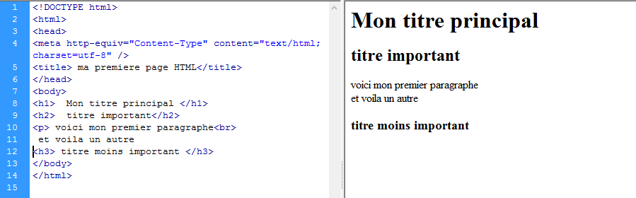

Les titres et les paragraphes en HTML
Les titres en HTML
Il existe six niveaux hiérarchiques de titres définis par les éléments h1, h2, h3, h4, h5 et h6. L'élément h1 représente un titre très important, h2
un titre important, h3 un titre d'importance moyenne, etc.
Les paragraphes en HTML
Pour créer des paragraphes en HTML, nous allons utiliser l’élément p .
Pour chaque nouveau paragraphe, un retour à la ligne va être créé automatiquement et affiché par votre navigateur
Les espaces et les retours a la ligne en HTML
Les retours à la ligne en HTML
Pour effectuer un retour à la ligne en HTML nous allons devoir utiliser l’élément br qui est représenté par une unique balise orpheline.
il peut être intéressant d’utiliser l’élément hr plutôt que br . L'élément hr a justement été créé pour définir un retour à la
ligne avec changement de thématique. Tout comme br, cet élément est représenté par une balise orpheline.

Gestion des espaces en HTML
Il n’existe pas à proprement parler d’élément permettant de gérer les espaces en HTML.
Cependant, on va pouvoir utiliser l’élément pre . Le texte écrit à l’intérieur de cet élément va conserver la mise en forme que nous allons lui donner.
Definir l'importance des textes en HTML
L’élément strong
L’élément HTML
strong va être utilisé pour signifier qu’un contenu est très important En résultat, le navigateur affichera le contenu à l’intérieur de l’élément strong en gras .
L’élément em
L’élément HTML
em sert à indiquer qu’un texte doit être considéré comme relativement important, Le résultat visuel par défaut de l’emphase est la mise en
italique du texte contenu dans l’élément.
L’élément mark
L’élément HTML mark va nous permettre de faire ressortir un contenu en le marquant.
LES LISTES EN HTML
Les listes non-ordonnées
Les listes non-ordonnées vont être utiles pour lister des éléments sans hiérarchie ni ordre logique.Pour créer une liste non-ordonnée,
nous allons avoir besoin d’un élément
ul qui va présenter la liste et l'élément et
li qui va présenter les éléments de la liste .
Les listes ordonnées
Au contraire des listes non-ordonnées, nous allons utiliser
les listes ordonnées lorsqu’il y aura une notion d’ordre ou de progression logique entre les éléments de notre liste.
Pour créer une liste ordonnée, nous allons cette fois-ci utiliser l’élément
ol pour créer la liste en soi même et l’élément
li qui va présenter les éléments de la liste .
Les listes de définitions
Pour créer
une liste de définitions, nous allons cette fois-ci utiliser l’élément
dl pour définir la liste en soi, puis des éléments
dt pour chaque élément à
décrire et enfin l’élément
dd pour la définition / description en soi.
Les listes imbriquées
Pour imbriquer une liste dans une autre, il suffit de définir une nouvelle liste à l’intérieur de l’un des éléments d’une autre liste, juste avant la balise fermante de cet élément.
Lien internes et externes en HTML
Pour créer
des liens en HTML, nous allons utiliser l’élément
a accompagné de son attribut
href (hypertext reference) qui va prendre comme valeur la cible du lien.
par exemple: < a href=" https://fr.wikipedia.org" > ce lien </ a >
le texte situé entre les balises ouvrante et fermante de notre élément
a correspond au texte cliquable et également à la seule partie visible du lien pour l'utilisateur. Dans notre cas,
cela correspond à « ce lien ».